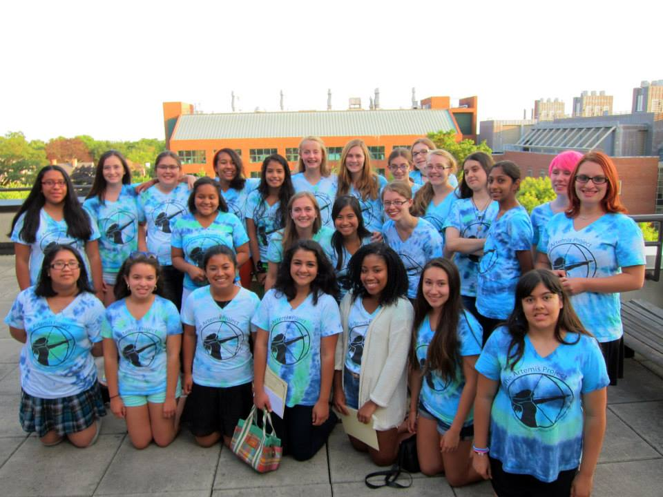

Student Applications

Applications for student admittance to Artemis next summer will be open in spring of 2016. Student positions are open to eighth graders (entering the ninth grade in the fall of 2016) who identify as female and have an interest in studying science, technology, and math.
You need not have prior experience with computers to apply for and flourish in the Artemis program! The applicants who really stand out aren't necessarily the ones with technological experience, but rather those who show the most enthusiasm, effort, and originality in their applications.
The application process varies from year to year, but it generally consists of several short-answer questions, which you can answer in around a paragraph each. Additionally, we require that Artemis applicants ask a teacher who knows them well to fill out a brief recommendation.